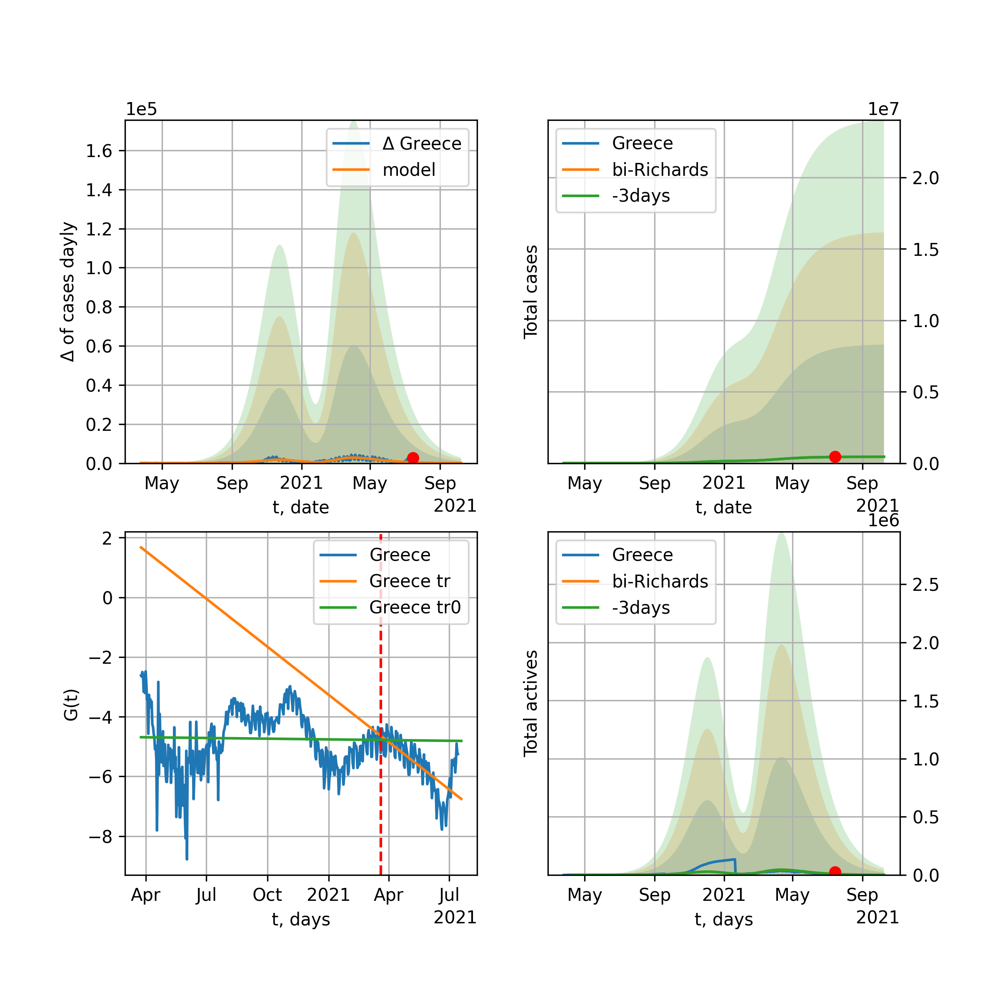

Multi-logistic model of COVID-19 dynamics
Model, code, results
Project maintained by algmaknick Hosted on GitHub Pages — Theme by mattgraham
World

World data at: 2021-01-11
10 day model MAPE: 0.007208
model: bi-Richards
coeffs: [2.69997122e+07 2.69169674e+00 1.19477127e+02 1.15270088e-02]
rational stdev: 0.174298
forecast at the end of period: +611 days
deltaDaycases: 14900
total cases: 179793988 ± 31337769
total death: 3845136 ± 2010600
bi-Richards approximation splitting point: 240
actives k: 33
trend coefficient of determination: 0.765504
intercept: -3.154578
slope: -0.008785
trend coefficient of determination: 0.331877
intercept: -3.126207
slope: -0.006625
European Union

European Union data at: 2021-01-11
10 day model MAPE: 0.014575
model: bi-Richards
coeffs: [1.61468850e+07 1.97106038e+00 1.03772186e+02 1.46819859e-02]
rational stdev: 0.282839
forecast at the end of period: +166 days
deltaDaycases: 1919
total cases: 19356818 ± 5474857
total death: 461448 ± 391546
bi-Richards approximation splitting point: 230
actives k: 26
trend coefficient of determination: 0.206582
intercept: -3.591112
slope: -0.009165
trend coefficient of determination: 0.747107
intercept: 1.039515
slope: -0.020319
Brazil

Brazil data at: 2021-01-11
10 day model MAPE: 0.009573
model: bi-Richards
coeffs: [2.81104380e+06 2.05697243e+00 1.73631417e+02 1.71043461e-02]
rational stdev: 0.252019
forecast at the end of period: +201 days
deltaDaycases: 190
total cases: 9365592 ± 2360306
total death: 234452 ± 177259
bi-Richards approximation splitting point: 220
actives k: 17
trend coefficient of determination: 0.526733
intercept: -2.102628
slope: -0.015081
trend coefficient of determination: 0.065765
intercept: -6.877762
slope: 0.004471
Russia

Russia data at: 2021-01-11
10 day model MAPE: 0.002847
model: bi-Richards
coeffs: [4.54393843e+06 6.71902698e-01 2.66542746e+01 2.46077034e-02]
rational stdev: 0.162604
forecast at the end of period: +271 days
deltaDaycases: 579
total cases: 5642752 ± 917534
total death: 102587 ± 50043
bi-Richards approximation splitting point: 200
actives k: 26
trend coefficient of determination: 0.731005
intercept: -2.990058
slope: -0.015807
trend coefficient of determination: 0.566047
intercept: -3.613748
slope: -0.005494
USA

USA data at: 2021-01-11
10 day model MAPE: 0.013604
model: bi-Richards
coeffs: [2.00614618e+07 1.67268094e+00 1.18374243e+02 1.58790141e-02]
rational stdev: 0.236286
forecast at the end of period: +614 days
deltaDaycases: 21
total cases: 33097968 ± 7820597
total death: 550959 ± 390552
bi-Richards approximation splitting point: 240
actives k: 52
trend coefficient of determination: 0.677216
intercept: -2.858237
slope: -0.012423
trend coefficient of determination: 0.218212
intercept: -3.243619
slope: -0.005206
Spain

Spain data at: 2021-01-11
10 day model MAPE: 0.020445
model: bi-Richards
coeffs: [1.93543838e+06 5.48082303e-02 2.07356095e+02 4.93475158e-01]
rational stdev: 0.128358
forecast at the end of period: +61 days
deltaDaycases: 1146
total cases: 2170990 ± 278664
total death: 53740 ± 20693
bi-Richards approximation splitting point: 170
actives k: 35
trend coefficient of determination: 0.424658
intercept: -8.433799
slope: -0.028971
trend coefficient of determination: 0.544660
intercept: -8.096952
slope: -0.014174
Italy

Italy data at: 2021-01-11
10 day model MAPE: 0.020714
model: bi-Richards
coeffs: [2.09390628e+06 1.81029425e-01 2.26603567e+02 2.52410794e-01]
rational stdev: 0.155168
forecast at the end of period: +26 days
deltaDaycases: 2026
total cases: 2299776 ± 356850
total death: 79575 ± 37042
bi-Richards approximation splitting point: 200
actives k: 28
trend coefficient of determination: 0.622942
intercept: -5.215319
slope: -0.029309
trend coefficient of determination: 0.084023
intercept: -6.176370
slope: -0.006267
United Kingdom

United Kingdom data at: 2021-01-11
10 day model MAPE: 0.001495
model: bi-Richards
coeffs: [3.08092919e+04 1.06809790e+00 2.35188035e+01 7.82666932e-01]
rational stdev: 0.435682
forecast at the end of period: +271 days
deltaDaycases: 0
total cases: 16501915 ± 7189588
total death: 433698 ± 566863
bi-Richards approximation splitting point: 275
actives k: 43
trend coefficient of determination: 0.425652
intercept: -11.638565
slope: -0.018117
trend coefficient of determination: 0.105456
intercept: -17.319106
slope: 0.006027
France

France data at: 2021-01-11
10 day model MAPE: 0.004478
model: bi-Richards
coeffs: [1.50488042e+06 7.28462913e-02 2.25945827e+02 1.66057994e+00]
rational stdev: 0.249958
forecast at the end of period: +236 days
deltaDaycases: 14
total cases: 6051260 ± 1512562
total death: 147783 ± 110818
bi-Richards approximation splitting point: 225
actives k: 105
trend coefficient of determination: 0.383655
intercept: -22.422967
slope: -0.020206
trend coefficient of determination: 0.609932
intercept: -18.229624
slope: -0.041549
Germany

Germany data at: 2021-01-11
10 day model MAPE: 0.004439
model: bi-Richards
coeffs: [2.67384355e+06 1.59868737e-01 1.88962357e+02 1.48142194e-01]
rational stdev: 0.199042
forecast at the end of period: +145 days
deltaDaycases: 942
total cases: 2865807 ± 570415
total death: 62150 ± 37111
bi-Richards approximation splitting point: 215
actives k: 17
trend coefficient of determination: 0.325250
intercept: -5.256954
slope: -0.014079
trend coefficient of determination: 0.464583
intercept: -2.917426
slope: -0.012096
Turkey

Turkey data at: 2021-01-11
10 day model MAPE: 0.002757
model: bi-Richards
coeffs: [1.27843079e+06 5.35815572e-02 2.63879347e+02 1.58356697e+00]
rational stdev: 0.219169
forecast at the end of period: +201 days
deltaDaycases: 89
total cases: 2490962 ± 545942
total death: 24500 ± 16108
bi-Richards approximation splitting point: 230
actives k: 17
trend coefficient of determination: 0.574382
intercept: -21.908093
slope: -0.030742
trend coefficient of determination: 0.653777
intercept: -20.791986
slope: -0.025209
Iran

Iran data at: 2021-01-11
10 day model MAPE: 0.009925
model: bi-Richards
coeffs: [7.64737993e+05 6.00445146e-02 2.72672110e+02 1.05695320e+00]
rational stdev: 0.240582
forecast at the end of period: +355 days
deltaDaycases: 13
total cases: 1371059 ± 329852
total death: 59676 ± 43070
bi-Richards approximation splitting point: 200
actives k: 25
trend coefficient of determination: 0.686501
intercept: -11.253472
slope: -0.046334
trend coefficient of determination: 0.578544
intercept: -15.572331
slope: -0.013013
Canada

Canada data at: 2021-01-11
10 day model MAPE: 0.009216
model: bi-Richards
coeffs: [1.20698302e+06 8.66404387e-01 4.48971750e+01 1.81941991e-02]
rational stdev: 0.277139
forecast at the end of period: +537 days
deltaDaycases: 3
total cases: 1357746 ± 376284
total death: 34718 ± 28865
bi-Richards approximation splitting point: 240
actives k: 17
trend coefficient of determination: 0.469668
intercept: -2.941716
slope: -0.014131
trend coefficient of determination: 0.095865
intercept: -3.276926
slope: -0.004469
South Africa

South Africa data at: 2021-01-11
10 day model MAPE: 0.004944
model: bi-Richards
coeffs: [8.29355532e+05 4.04220818e-02 3.13023269e+02 5.63036580e+00]
rational stdev: 1.063694
forecast at the end of period: +61 days
deltaDaycases: 0
total cases: 1515215 ± 1611725
total death: 40813 ± 130237
bi-Richards approximation splitting point: 235
actives k: 17
trend coefficient of determination: 0.851230
intercept: -35.887405
slope: -0.247408
trend coefficient of determination: 0.107378
intercept: -80.483545
slope: -0.006016
Belgium

Belgium data at: 2021-01-11
10 day model MAPE: 0.011672
model: bi-Richards
coeffs: [5.67432006e+05 9.11111503e-02 2.25463304e+02 8.98897321e-01]
rational stdev: 0.178033
forecast at the end of period: +26 days
deltaDaycases: 11
total cases: 633251 ± 112739
total death: 19154 ± 10230
bi-Richards approximation splitting point: 170
actives k: 61
trend coefficient of determination: 0.556861
intercept: -10.452269
slope: -0.042850
trend coefficient of determination: 0.640154
intercept: -9.042315
slope: -0.029269
Peru

Peru data at: 2021-01-11
10 day model MAPE: 0.005108
model: bi-Richards
coeffs: [ 6.47014430e+05 4.17312528e+00 -1.70660929e+01 6.63661735e-03]
rational stdev: 0.230949
forecast at the end of period: +131 days
deltaDaycases: 10
total cases: 1015112 ± 234439
total death: 37513 ± 25990
bi-Richards approximation splitting point: 110
actives k: 21
trend coefficient of determination: 0.797776
intercept: -1.437800
slope: -0.026443
trend coefficient of determination: 0.831666
intercept: -2.510582
slope: -0.014024
Netherlands

Netherlands data at: 2021-01-11
10 day model MAPE: 0.004730
model: bi-Richards
coeffs: [1.00497859e+05 3.56320591e-01 2.20573712e+02 9.12912468e-01]
rational stdev: 0.819966
forecast at the end of period: +131 days
deltaDaycases: 27
total cases: 2505223 ± 2054198
total death: 35402 ± 87085
bi-Richards approximation splitting point: 245
actives k: 35
trend coefficient of determination: 0.250979
intercept: -12.503095
slope: -0.015380
trend coefficient of determination: 0.490751
intercept: -13.040695
slope: -0.012954
India

India data at: 2021-01-11
10 day model MAPE: 0.001239
model: bi-Richards
coeffs: [7.03802856e+06 1.63941177e+00 2.03202548e+00 1.45285952e-02]
rational stdev: 0.207009
forecast at the end of period: +271 days
deltaDaycases: 122
total cases: 11232658 ± 2325257
total death: 162236 ± 100752
bi-Richards approximation splitting point: 92
actives k: 13
trend coefficient of determination: 0.605114
intercept: -1.931264
slope: -0.017208
trend coefficient of determination: 0.951071
intercept: -1.497909
slope: -0.016191
Switzerland

Switzerland data at: 2021-01-11
10 day model MAPE: 0.014201
model: bi-Richards
coeffs: [4.78975027e+05 3.15147342e+00 1.13090200e+02 1.11796846e-02]
rational stdev: 0.217835
forecast at the end of period: +96 days
deltaDaycases: 64
total cases: 518137 ± 112868
total death: 8944 ± 5844
bi-Richards approximation splitting point: 215
actives k: 17
trend coefficient of determination: 0.091343
intercept: -4.509177
slope: -0.007989
trend coefficient of determination: 0.753555
intercept: 1.895088
slope: -0.023389
Ecuador

Ecuador data at: 2021-01-11
10 day model MAPE: 0.004269
model: bi-Richards
coeffs: [ 1.87427869e+05 1.41297308e+00 -1.18116819e+02 1.06676719e-02]
rational stdev: 0.074680
forecast at the end of period: +131 days
deltaDaycases: 77
total cases: 247130 ± 18455
total death: 15824 ± 3545
bi-Richards approximation splitting point: 80
actives k: 26
trend coefficient of determination: 0.274007
intercept: -2.226377
slope: -0.047350
trend coefficient of determination: 0.137754
intercept: -4.099242
slope: -0.006436
Portugal

Portugal data at: 2021-01-11
10 day model MAPE: 0.037182
model: bi-Richards
coeffs: [5.00295928e+05 1.79329675e+00 1.05768609e+02 1.52871331e-02]
rational stdev: 0.266609
forecast at the end of period: +131 days
deltaDaycases: 105
total cases: 571342 ± 152324
total death: 9253 ± 7400
bi-Richards approximation splitting point: 210
actives k: 21
trend coefficient of determination: 0.583915
intercept: -2.670330
slope: -0.017252
trend coefficient of determination: 0.136535
intercept: -2.654994
slope: -0.006447
Saudi Arabia

Saudi Arabia data at: 2021-01-11
10 day model MAPE: 0.000061
model: bi-Richards
coeffs: [2.95084190e+04 1.90728886e+00 6.24929613e+01 1.42997405e-02]
rational stdev: 0.209449
forecast at the end of period: +131 days
deltaDaycases: 2
total cases: 367529 ± 76978
total death: 6356 ± 3993
bi-Richards approximation splitting point: 200
actives k: 17
trend coefficient of determination: 0.971404
intercept: -1.810245
slope: -0.024622
trend coefficient of determination: 0.869103
intercept: -3.336569
slope: -0.016312
Sweden

Sweden data at: 2021-01-08
10 day model MAPE: 0.003777
model: bi-Richards
coeffs: [6.86181712e+05 1.84804435e-01 2.12691093e+02 1.40928826e-01]
rational stdev: 0.244341
forecast at the end of period: +169 days
deltaDaycases: 123
total cases: 769293 ± 187969
total death: 14825 ± 10867
bi-Richards approximation splitting point: 200
actives k: 35
trend coefficient of determination: 0.874465
intercept: -2.650985
slope: -0.029525
trend coefficient of determination: 0.367050
intercept: -9.087222
slope: 0.011424
Pakistan

Pakistan data at: 2021-01-11
10 day model MAPE: 0.005928
model: bi-Richards
coeffs: [2.30083601e+05 3.48922299e-01 1.91393690e+02 1.06067497e-01]
rational stdev: 2.235684
forecast at the end of period: +166 days
deltaDaycases: 4
total cases: 551450 ± 1232869
total death: 11663 ± 78224
bi-Richards approximation splitting point: 260
actives k: 26
trend coefficient of determination: 0.694207
intercept: -3.494867
slope: -0.018422
trend coefficient of determination: 0.568688
intercept: -1.976453
slope: -0.016692
Ireland

Ireland data at: 2021-01-11
10 day model MAPE: 0.010176
model: bi-Richards
coeffs: [2.57738733e+03 3.18767857e+00 1.89731276e+01 3.46320565e-01]
rational stdev: 0.254706
forecast at the end of period: +551 days
deltaDaycases: 0
total cases: 1025112 ± 261102
total death: 15806 ± 12077
bi-Richards approximation splitting point: 265
actives k: 105
trend coefficient of determination: 0.071075
intercept: -8.040198
slope: -0.006243
trend coefficient of determination: 0.869540
intercept: -32.182053
slope: 0.085527
Mexico

Mexico data at: 2021-01-11
10 day model MAPE: 0.012164
model: bi-Richards
coeffs: [6.01235771e+05 2.39484833e+00 1.61365059e+02 1.49413915e-02]
rational stdev: 0.278386
forecast at the end of period: +481 days
deltaDaycases: 4
total cases: 1917543 ± 533816
total death: 167132 ± 139581
bi-Richards approximation splitting point: 260
actives k: 17
trend coefficient of determination: 0.915583
intercept: -1.985279
slope: -0.015650
trend coefficient of determination: 0.097444
intercept: -3.100023
slope: -0.007070
Singapore

Singapore data at: 2021-01-11
10 day model MAPE: 0.000309
model: bi-Richards
coeffs: [3.95472107e+04 1.24614452e-01 7.57466847e+01 2.37182586e-01]
rational stdev: 0.295231
forecast at the end of period: +131 days
deltaDaycases: 0
total cases: 58776 ± 17352
total death: 28 ± 24
bi-Richards approximation splitting point: 80
actives k: 26
trend coefficient of determination: 0.191412
intercept: -3.228352
slope: -0.020347
trend coefficient of determination: 0.769957
intercept: -3.545797
slope: -0.026022
Chile

Chile data at: 2021-01-11
10 day model MAPE: 0.013747
model: bi-Richards
coeffs: [ 3.34500721e+05 1.77722277e+00 -1.04071805e+02 7.94625895e-03]
S.Korea scenario coeffs: [0.36242246, 2.56241634, 1.84890887, 0.13324732]
rational stdev: 0.621072
forecast at the end of period: +131 days
deltaDaycases: 270
total cases: 707539 ± 439432
total death: 18800 ± 35028
bi-Richards approximation splitting point: 170
actives k: 10
trend coefficient of determination: 0.912389
intercept: -1.409644
slope: -0.025232
trend coefficient of determination: 0.023196
intercept: -5.554069
slope: -0.001067
Israel

Israel data at: 2021-01-11
10 day model MAPE: 0.013656
model: bi-Richards
coeffs: [1.25253778e+06 3.77670149e-02 3.44526529e+02 7.94129151e+00]
rational stdev: 0.365795
forecast at the end of period: +250 days
deltaDaycases: 0
total cases: 1547447 ± 566048
total death: 11366 ± 12472
bi-Richards approximation splitting point: 235
actives k: 11
trend coefficient of determination: 0.868396
intercept: -67.709597
slope: -0.175213
trend coefficient of determination: 0.175972
intercept: -104.039669
slope: -0.011227
Austria

Austria data at: 2021-01-11
10 day model MAPE: 0.015038
model: bi-Richards
coeffs: [3.30832478e+05 9.87652489e-02 2.47725146e+02 6.55655182e-01]
rational stdev: 0.312120
forecast at the end of period: +47 days
deltaDaycases: 126
total cases: 382181 ± 119286
total death: 6745 ± 6315
bi-Richards approximation splitting point: 210
actives k: 13
trend coefficient of determination: 0.311628
intercept: -8.331130
slope: -0.023569
trend coefficient of determination: 0.769682
intercept: -3.797419
slope: -0.031249
Belarus

Belarus data at: 2021-01-11
10 day model MAPE: 0.003999
model: bi-Richards
coeffs: [3.28604295e+05 5.37827232e-01 5.18845127e+01 3.00536431e-02]
rational stdev: 0.114365
forecast at the end of period: +341 days
deltaDaycases: 18
total cases: 401953 ± 45969
total death: 2866 ± 983
bi-Richards approximation splitting point: 220
actives k: 21
trend coefficient of determination: 0.521031
intercept: -3.237639
slope: -0.016500
trend coefficient of determination: 0.251074
intercept: -3.966607
slope: -0.003668
Japan

Japan data at: 2021-01-11
10 day model MAPE: 0.023522
model: bi-Richards
coeffs: [1.71385054e+06 1.98350840e-02 4.46791703e+02 6.74086640e+00]
rational stdev: 0.376314
forecast at the end of period: +243 days
deltaDaycases: 47
total cases: 1817479 ± 683943
total death: 25631 ± 28935
bi-Richards approximation splitting point: 200
actives k: 11
trend coefficient of determination: 0.795968
intercept: -38.099799
slope: -0.234877
trend coefficient of determination: 0.952787
intercept: -66.665739
slope: -0.060302
China

China data at: 2021-01-11
10 day model MAPE: 0.001049
model: bi-Richards
coeffs: [ 6.03836063e+03 2.27809518e+00 -3.22037624e+02 4.69252994e-03]
rational stdev: 0.064505
forecast at the end of period: +131 days
deltaDaycases: 2
total cases: 87717 ± 5658
total death: 4640 ± 897
bi-Richards approximation splitting point: 120
actives k: 17
trend coefficient of determination: 0.818027
intercept: -2.241232
slope: -0.076334
trend coefficient of determination: 0.121165
intercept: -9.972995
slope: 0.005016
Qatar

Qatar data at: 2021-01-11
10 day model MAPE: 0.002254
model: bi-Richards
coeffs: [ 3.93253935e+04 1.65776544e+00 -8.68667965e+01 1.00623409e-02]
S.Korea scenario coeffs: [0.36242246, 2.56241634, 1.84890887, 0.13324732]
rational stdev: 0.075406
forecast at the end of period: +61 days
deltaDaycases: 46
total cases: 149549 ± 11276
total death: 251 ± 56
bi-Richards approximation splitting point: 144
actives k: 17
trend coefficient of determination: 0.918153
intercept: -1.937457
slope: -0.030840
trend coefficient of determination: 0.429502
intercept: -5.661749
slope: -0.004283
Poland

Poland data at: 2021-01-11
10 day model MAPE: 0.012220
model: bi-Richards
coeffs: [1.29283601e+06 3.06170187e+00 1.47313623e+02 1.45524622e-02]
rational stdev: 0.269457
forecast at the end of period: +61 days
deltaDaycases: 500
total cases: 1437336 ± 387299
total death: 32319 ± 26125
bi-Richards approximation splitting point: 200
actives k: 21
trend coefficient of determination: 0.684255
intercept: -2.396736
slope: -0.016240
trend coefficient of determination: 0.464888
intercept: 0.524417
slope: -0.018549
UAE

UAE data at: 2021-01-11
10 day model MAPE: 0.019644
model: bi-Richards
coeffs: [ 2.92050641e+05 5.10977155e-01 -5.67795293e+01 2.45971743e-02]
rational stdev: 0.096843
forecast at the end of period: +341 days
deltaDaycases: 28
total cases: 346734 ± 33578
total death: 1058 ± 307
bi-Richards approximation splitting point: 128
actives k: 11
trend coefficient of determination: 0.943814
intercept: -2.225828
slope: -0.029106
trend coefficient of determination: 0.055608
intercept: -5.609741
slope: 0.002096
Romania

Romania data at: 2021-01-11
10 day model MAPE: 0.008745
model: bi-Richards
coeffs: [5.76688694e+05 5.75789122e-01 1.77870904e+02 6.66361566e-02]
rational stdev: 0.288551
forecast at the end of period: +124 days
deltaDaycases: 22
total cases: 729311 ± 210443
total death: 18117 ± 15683
bi-Richards approximation splitting point: 220
actives k: 17
trend coefficient of determination: 0.471068
intercept: -3.190379
slope: -0.011392
trend coefficient of determination: 0.678921
intercept: 0.463279
slope: -0.021318
Panama

Panama data at: 2021-01-11
10 day model MAPE: 0.003441
model: bi-Richards
coeffs: [6.80721423e+05 3.22453317e-01 1.54509799e+02 5.28162946e-02]
rational stdev: 0.243799
forecast at the end of period: +383 days
deltaDaycases: 27
total cases: 820715 ± 200089
total death: 13126 ± 9600
bi-Richards approximation splitting point: 229
actives k: 17
trend coefficient of determination: 0.795519
intercept: -2.610375
slope: -0.015943
trend coefficient of determination: 0.554242
intercept: -8.787438
slope: 0.012929
Ukraine

Ukraine data at: 2021-01-11
10 day model MAPE: 0.001024
model: bi-Richards
coeffs: [7.07486013e+05 4.97621106e-02 2.51528945e+02 1.28616070e+00]
rational stdev: 0.265806
forecast at the end of period: +761 days
deltaDaycases: 120
total cases: 2180045 ± 579468
total death: 38812 ± 30949
bi-Richards approximation splitting point: 180
actives k: 35
trend coefficient of determination: 0.742094
intercept: -10.918908
slope: -0.057449
trend coefficient of determination: 0.946581
intercept: -13.047607
slope: -0.033148
Indonesia

Indonesia data at: 2021-01-11
10 day model MAPE: 0.013764
model: bi-Richards
coeffs: [ 2.47226531e+06 4.03941889e-01 -2.71066459e+02 1.70634685e-02]
rational stdev: 0.170884
forecast at the end of period: +719 days
deltaDaycases: 142
total cases: 2498716 ± 426991
total death: 72696 ± 37267
bi-Richards approximation splitting point: 75
actives k: 17
trend coefficient of determination: 0.798399
intercept: -1.995421
slope: -0.028896
trend coefficient of determination: 0.450840
intercept: -3.485420
slope: -0.005476
Bangladesh

Bangladesh data at: 2021-01-11
10 day model MAPE: 0.000467
model: bi-Richards
coeffs: [1.24695865e+05 6.32966766e-02 2.52421441e+02 8.24226213e-01]
rational stdev: 0.178265
forecast at the end of period: +159 days
deltaDaycases: 4
total cases: 539714 ± 96212
total death: 8047 ± 4303
bi-Richards approximation splitting point: 210
actives k: 35
trend coefficient of determination: 0.870088
intercept: -6.413642
slope: -0.054636
trend coefficient of determination: 0.437262
intercept: -13.904862
slope: -0.009815
South_Korea

South Korea data at: 2021-01-11
10 day model MAPE: 0.006007
model: bi-Richards
coeffs: [6.09418125e+05 1.82220203e-02 4.52487021e+02 5.96669386e+00]
rational stdev: 0.183802
forecast at the end of period: +201 days
deltaDaycases: 4
total cases: 621097 ± 114158
total death: 10388 ± 5727
bi-Richards approximation splitting point: 150
actives k: 26
trend coefficient of determination: 0.389272
intercept: -49.890129
slope: -0.115705
trend coefficient of determination: 0.871930
intercept: -55.679406
slope: -0.041780
Moldova

Moldova data at: 2021-01-11
10 day model MAPE: 0.005654
model: bi-Richards
coeffs: [6.99550490e+04 3.46913065e-02 2.74641702e+02 2.57023313e+00]
rational stdev: 0.258450
forecast at the end of period: +411 days
deltaDaycases: 9
total cases: 186598 ± 48226
total death: 3934 ± 3050
bi-Richards approximation splitting point: 190
actives k: 17
trend coefficient of determination: 0.754054
intercept: -15.859190
slope: -0.103796
trend coefficient of determination: 0.868893
intercept: -24.869898
slope: -0.036380
Denmark

Denmark data at: 2021-01-11
10 day model MAPE: 0.013597
model: bi-Richards
coeffs: [1.16424809e+05 4.23796062e-02 2.93551551e+02 3.90638723e+00]
rational stdev: 0.301498
forecast at the end of period: +621 days
deltaDaycases: 0
total cases: 542000 ± 163412
total death: 4737 ± 4284
bi-Richards approximation splitting point: 236
actives k: 17
trend coefficient of determination: 0.502098
intercept: -32.576990
slope: -0.065785
trend coefficient of determination: 0.977429
intercept: -24.907568
slope: -0.085990
Serbia

Serbia data at: 2021-01-11
10 day model MAPE: 0.008544
model: bi-Richards
coeffs: [3.41535891e+05 1.15470366e-01 2.43358920e+02 6.53968155e-01]
rational stdev: 0.236716
forecast at the end of period: +61 days
deltaDaycases: 13
total cases: 373654 ± 88449
total death: 3728 ± 2647
bi-Richards approximation splitting point: 195
actives k: 35
trend coefficient of determination: 0.689521
intercept: -7.906748
slope: -0.028612
trend coefficient of determination: 0.170869
intercept: -8.128628
slope: -0.014783
Kuwait

Kuwait data at: 2021-01-11
10 day model MAPE: 0.000089
model: bi-Richards
coeffs: [ 1.54420356e+05 1.42396128e+00 -2.03373244e+02 9.18259393e-03]
rational stdev: 0.169111
forecast at the end of period: +180 days
deltaDaycases: 29
total cases: 174601 ± 29527
total death: 1065 ± 540
bi-Richards approximation splitting point: 90
actives k: 17
trend coefficient of determination: 0.167152
intercept: -2.532771
slope: -0.009729
trend coefficient of determination: 0.824214
intercept: -3.199163
slope: -0.010555
Philippines

Philippines data at: 2021-01-11
10 day model MAPE: 0.007054
model: bi-Richards
coeffs: [5.04552733e+05 2.31843237e-01 3.43368741e+01 8.45821043e-02]
rational stdev: 0.338301
forecast at the end of period: +117 days
deltaDaycases: 67
total cases: 505555 ± 171029
total death: 9720 ± 9864
bi-Richards approximation splitting point: 36
actives k: 26
trend coefficient of determination: 0.513822
intercept: -1.592238
slope: -0.071173
trend coefficient of determination: 0.797078
intercept: -3.460228
slope: -0.011897
Norway

Norway data at: 2021-01-11
10 day model MAPE: 0.027364
model: bi-Richards
coeffs: [6.11099093e+04 5.63635616e-02 2.46428486e+02 4.86644313e-01]
rational stdev: 0.190275
forecast at the end of period: +117 days
deltaDaycases: 22
total cases: 69826 ± 13286
total death: 597 ± 340
bi-Richards approximation splitting point: 200
actives k: 35
trend coefficient of determination: 0.425759
intercept: -6.624915
slope: -0.026945
trend coefficient of determination: 0.149190
intercept: -8.003280
slope: -0.005477
Czechia

Czechia data at: 2021-01-11
10 day model MAPE: 0.026962
model: bi-Richards
coeffs: [5.01281900e+05 7.35565242e+00 1.14363639e+02 5.98096849e-03]
rational stdev: 0.447262
forecast at the end of period: +117 days
deltaDaycases: 4
total cases: 967212 ± 432597
total death: 15439 ± 20715
bi-Richards approximation splitting point: 210
actives k: 17
trend coefficient of determination: 0.076614
intercept: -3.576907
slope: -0.005624
trend coefficient of determination: 0.441126
intercept: 0.886641
slope: -0.019285
Colombia

Colombia data at: 2021-01-11
10 day model MAPE: 0.017157
model: bi-Richards
coeffs: [ 1.75021896e+06 1.59360392e+00 -1.00741916e+01 1.01887486e-02]
rational stdev: 0.237231
forecast at the end of period: +131 days
deltaDaycases: 2049
total cases: 2454666 ± 582322
total death: 63278 ± 45034
bi-Richards approximation splitting point: 170
actives k: 11
trend coefficient of determination: 0.631772
intercept: -2.173554
slope: -0.011483
trend coefficient of determination: 0.270632
intercept: -4.192269
slope: -0.003289
Australia

Australia data at: 2021-01-11
10 day model MAPE: 0.001876
model: bi-Richards
coeffs: [2.08657464e+04 1.52472125e-01 1.14841221e+02 4.58910896e-01]
rational stdev: 0.047875
forecast at the end of period: +47 days
deltaDaycases: 0
total cases: 27799 ± 1330
total death: 882 ± 126
bi-Richards approximation splitting point: 104
actives k: 26
trend coefficient of determination: 0.541419
intercept: -6.923473
slope: -0.046283
trend coefficient of determination: 0.722129
intercept: -5.529575
slope: -0.027066
Malaysia

Malaysia data at: 2021-01-11
10 day model MAPE: 0.027440
model: bi-Richards
coeffs: [3.19735581e+05 9.76634110e-01 2.09288437e+01 1.49935277e-02]
rational stdev: 0.203735
forecast at the end of period: +271 days
deltaDaycases: 83
total cases: 322933 ± 65792
total death: 1296 ± 792
bi-Richards approximation splitting point: 170
actives k: 15
trend coefficient of determination: 0.659165
intercept: -2.366396
slope: -0.033526
trend coefficient of determination: 0.347467
intercept: -9.633186
slope: 0.020141
Dominican Republic

Dominican Republic data at: 2021-01-11
10 day model MAPE: 0.009131
model: bi-Richards
coeffs: [ 2.36017354e+05 7.79711330e-01 -9.42587387e+01 1.38897435e-02]
rational stdev: 0.180217
forecast at the end of period: +271 days
deltaDaycases: 148
total cases: 327762 ± 59068
total death: 4340 ± 2346
bi-Richards approximation splitting point: 200
actives k: 35
trend coefficient of determination: 0.786633
intercept: -2.594641
slope: -0.015464
trend coefficient of determination: 0.204617
intercept: -7.514543
slope: 0.007655
Egypt

Egypt data at: 2021-01-11
10 day model MAPE: 0.002031
model: bi-Richards
coeffs: [1.30541079e+07 8.51777188e-02 1.86249148e+02 7.33301067e-02]
rational stdev: 0.131969
forecast at the end of period: +831 days
deltaDaycases: 3021
total cases: 12664013 ± 1671255
total death: 692957 ± 274346
bi-Richards approximation splitting point: 230
actives k: 43
trend coefficient of determination: 0.911560
intercept: -2.379402
slope: -0.026144
trend coefficient of determination: 0.897293
intercept: -12.885213
slope: 0.024431
Finland

Finland data at: 2021-01-11
10 day model MAPE: 0.014853
model: bi-Richards
coeffs: [4.66210500e+04 7.41639374e-02 2.21542013e+02 3.29048440e-01]
rational stdev: 0.125356
forecast at the end of period: +362 days
deltaDaycases: 0
total cases: 54482 ± 6829
total death: 838 ± 315
bi-Richards approximation splitting point: 210
actives k: 26
trend coefficient of determination: 0.431395
intercept: -5.433017
slope: -0.024495
trend coefficient of determination: 0.321347
intercept: -4.708018
slope: -0.011724
Morocco

Morocco data at: 2021-01-11
10 day model MAPE: 0.001692
model: bi-Richards
coeffs: [3.21107511e+05 2.44025501e+00 1.34205156e+02 1.67802041e-02]
rational stdev: 0.362864
forecast at the end of period: +131 days
deltaDaycases: 5
total cases: 478713 ± 173707
total death: 8208 ± 8935
bi-Richards approximation splitting point: 210
actives k: 11
trend coefficient of determination: 0.177348
intercept: -3.163119
slope: -0.006348
trend coefficient of determination: 0.757457
intercept: 1.377977
slope: -0.024495
Uzbekistan

Uzbekistan data at: 2021-01-11
10 day model MAPE: 0.000951
model: bi-Richards
coeffs: [1.79447525e+04 5.92541637e+00 4.73899095e+01 5.21589167e-03]
rational stdev: 0.403409
forecast at the end of period: +19 days
deltaDaycases: 29
total cases: 78241 ± 31563
total death: 621 ± 751
bi-Richards approximation splitting point: 200
actives k: 11
trend coefficient of determination: 0.459916
intercept: -2.614232
slope: -0.011023
trend coefficient of determination: 0.802711
intercept: -0.795580
slope: -0.021183
Argentina

Argentina data at: 2021-01-11
10 day model MAPE: 0.013256
model: bi-Richards
coeffs: [6.00274881e+05 2.75640912e+00 3.51175930e+01 9.27443340e-03]
rational stdev: 0.231531
forecast at the end of period: +201 days
deltaDaycases: 31
total cases: 1812250 ± 419592
total death: 46752 ± 32473
bi-Richards approximation splitting point: 180
actives k: 16
trend coefficient of determination: 0.045682
intercept: -2.996950
slope: -0.004620
trend coefficient of determination: 0.708812
intercept: -1.223726
slope: -0.015386
Algeria

Algeria data at: 2021-01-11
10 day model MAPE: 0.005806
model: bi-Richards
coeffs: [5.04266133e+04 1.09769470e-01 2.19205731e+02 6.22837307e-01]
rational stdev: 0.103405
forecast at the end of period: +61 days
deltaDaycases: 1
total cases: 103150 ± 10666
total death: 2833 ± 878
bi-Richards approximation splitting point: 220
actives k: 35
trend coefficient of determination: 0.890841
intercept: -8.083976
slope: -0.021814
trend coefficient of determination: 0.957529
intercept: -2.382448
slope: -0.038857
Luxembourg

Luxembourg data at: 2021-01-11
10 day model MAPE: 0.003768
model: bi-Richards
coeffs: [4.07756849e+04 1.37880819e-01 2.21329955e+02 3.43466760e-01]
rational stdev: 0.249468
forecast at the end of period: +397 days
deltaDaycases: 2
total cases: 54914 ± 13699
total death: 611 ± 457
bi-Richards approximation splitting point: 170
actives k: 17
trend coefficient of determination: 0.211935
intercept: -6.114091
slope: -0.018518
trend coefficient of determination: 0.078519
intercept: -6.167703
slope: -0.007878
Thailand

Thailand data at: 2021-01-11
10 day model MAPE: 0.115959
model: bi-Richards
coeffs: [1.12541179e+05 1.51630295e-01 2.57186527e+02 1.90561656e-01]
rational stdev: 0.033500
forecast at the end of period: +201 days
deltaDaycases: 34
total cases: 115093 ± 3855
total death: 711 ± 71
bi-Richards approximation splitting point: 230
actives k: 17
trend coefficient of determination: 0.006786
intercept: -8.200231
slope: -0.001649
trend coefficient of determination: 0.611179
intercept: -22.324453
slope: 0.063387
Hungary

Hungary data at: 2021-01-11
10 day model MAPE: 0.008830
model: bi-Richards
coeffs: [3.47902215e+05 4.59153721e-02 2.22196728e+02 1.54262345e+00]
rational stdev: 0.107526
forecast at the end of period: +96 days
deltaDaycases: 1
total cases: 352173 ± 37867
total death: 10990 ± 3545
bi-Richards approximation splitting point: 140
actives k: 35
trend coefficient of determination: 0.219299
intercept: -16.856808
slope: -0.016724
trend coefficient of determination: 0.974375
intercept: -7.949210
slope: -0.065203
Greece

Greece data at: 2021-01-11
10 day model MAPE: 0.006662
model: bi-Richards
coeffs: [1.11397573e+05 5.40621504e-02 2.16903177e+02 1.83929043e+00]
rational stdev: 0.141705
forecast at the end of period: +96 days
deltaDaycases: 0
total cases: 154562 ± 21902
total death: 5644 ± 2399
bi-Richards approximation splitting point: 180
actives k: 70
trend coefficient of determination: 0.277995
intercept: -19.537503
slope: -0.010551
trend coefficient of determination: 0.945346
intercept: -9.591380
slope: -0.068085
Iraq

Iraq data at: 2021-01-11
10 day model MAPE: 0.003662
model: bi-Richards
coeffs: [6.58865688e+05 8.04420488e-02 9.94451303e+01 2.42153277e-01]
rational stdev: 0.233344
forecast at the end of period: +243 days
deltaDaycases: 10
total cases: 667014 ± 155643
total death: 14258 ± 9981
bi-Richards approximation splitting point: 80
actives k: 17
trend coefficient of determination: 0.478947
intercept: -3.773011
slope: -0.027769
trend coefficient of determination: 0.970669
intercept: -3.424198
slope: -0.021146
Croatia

Croatia data at: 2021-01-11
10 day model MAPE: 0.007657
model: bi-Richards
coeffs: [1.27253525e+05 9.42995933e-02 2.39301603e+02 7.57574536e-01]
rational stdev: 0.421044
forecast at the end of period: +131 days
deltaDaycases: 0
total cases: 230578 ± 97083
total death: 4610 ± 5823
bi-Richards approximation splitting point: 210
actives k: 11
trend coefficient of determination: 0.078611
intercept: -9.913975
slope: -0.009807
trend coefficient of determination: 0.840483
intercept: -0.169134
slope: -0.049516
Iceland

Iceland data at: 2021-01-09
10 day model MAPE: 0.007847
model: bi-Richards
coeffs: [3.87550133e+03 5.72763337e-02 2.22497329e+02 1.28801681e+00]
rational stdev: 0.159726
forecast at the end of period: +131 days
deltaDaycases: 0
total cases: 5657 ± 903
total death: 27 ± 12
bi-Richards approximation splitting point: 170
actives k: 17
trend coefficient of determination: 0.299396
intercept: -12.108443
slope: -0.037698
trend coefficient of determination: 0.448742
intercept: -11.150458
slope: -0.020551
Estonia

Estonia data at: 2021-01-11
10 day model MAPE: 0.022600
model: bi-Richards
coeffs: [4.60453947e+04 4.82001324e-02 2.81776707e+02 1.00298941e+00]
rational stdev: 0.157518
forecast at the end of period: +96 days
deltaDaycases: 10
total cases: 48287 ± 7606
total death: 409 ± 193
bi-Richards approximation splitting point: 200
actives k: 26
trend coefficient of determination: 0.253255
intercept: -10.975314
slope: -0.019934
trend coefficient of determination: 0.349716
intercept: -9.048424
slope: -0.016641
Bulgaria

Bulgaria data at: 2021-01-11
10 day model MAPE: 0.001352
model: bi-Richards
coeffs: [1.96747906e+05 2.27587931e-01 2.10389848e+02 2.33651340e-01]
rational stdev: 0.186668
forecast at the end of period: +61 days
deltaDaycases: 21
total cases: 218813 ± 40845
total death: 8613 ± 4823
bi-Richards approximation splitting point: 210
actives k: 35
trend coefficient of determination: 0.588560
intercept: -4.336633
slope: -0.015469
trend coefficient of determination: 0.705373
intercept: 3.378373
slope: -0.040489
New Zealand

New Zealand data at: 2021-01-10
10 day model MAPE: 0.005745
model: bi-Richards
coeffs: [ 8.30816769e+02 1.47981216e+00 -1.43776999e+02 9.79935014e-03]
rational stdev: 0.015531
forecast at the end of period: +13 days
deltaDaycases: 1
total cases: 2196 ± 34
total death: 24 ± 1
bi-Richards approximation splitting point: 100
actives k: 17
trend coefficient of determination: 0.536292
intercept: -3.230228
slope: -0.080914
trend coefficient of determination: 0.040816
intercept: -7.607322
slope: 0.003987
Slovenia

Slovenia data at: 2021-01-11
10 day model MAPE: 0.023745
model: bi-Richards
coeffs: [1.79592164e+05 1.98617602e+00 4.22697888e+01 1.25610365e-02]
rational stdev: 0.096093
forecast at the end of period: +96 days
deltaDaycases: 126
total cases: 178140 ± 17117
total death: 3853 ± 1110
bi-Richards approximation splitting point: 180
actives k: 17
trend coefficient of determination: 0.325228
intercept: -7.190158
slope: 0.018730
trend coefficient of determination: 0.243867
intercept: 0.624530
slope: -0.020918
Slovakia

Slovakia data at: 2021-01-11
10 day model MAPE: 0.028255
model: bi-Richards
coeffs: [3.48858763e+05 1.51827540e+00 6.19426073e+00 1.12932115e-02]
rational stdev: 0.276952
forecast at the end of period: +166 days
deltaDaycases: 206
total cases: 344914 ± 95524
total death: 4960 ± 4121
bi-Richards approximation splitting point: 170
actives k: 30
trend coefficient of determination: 0.119981
intercept: -3.715845
slope: -0.013618
trend coefficient of determination: 0.184673
intercept: -1.819405
slope: -0.009097
Lithuania

Lithuania data at: 2021-01-11
10 day model MAPE: 0.020525
model: bi-Richards
coeffs: [2.35575056e+05 2.64086838e-01 1.64791022e+02 1.12831409e-01]
rational stdev: 0.179061
forecast at the end of period: +187 days
deltaDaycases: 12
total cases: 265175 ± 47482
total death: 3688 ± 1981
bi-Richards approximation splitting point: 220
actives k: 35
trend coefficient of determination: 0.346819
intercept: -6.695266
slope: 0.010187
trend coefficient of determination: 0.645066
intercept: 2.389150
slope: -0.030559
Latvia

Latvia data at: 2021-01-11
10 day model MAPE: 0.004725
model: bi-Richards
coeffs: [1.81253114e+05 3.33348458e-01 1.11070551e+02 4.60078978e-02]
rational stdev: 0.134534
forecast at the end of period: +306 days
deltaDaycases: 34
total cases: 180563 ± 24291
total death: 3126 ± 1261
bi-Richards approximation splitting point: 210
actives k: 46
trend coefficient of determination: 0.080472
intercept: -4.804121
slope: -0.008175
trend coefficient of determination: 0.184738
intercept: -1.584377
slope: -0.009717
Cyprus

Cyprus data at: 2021-01-11
10 day model MAPE: 0.006431
model: bi-Richards
coeffs: [9.36761893e+04 7.22921025e-01 4.95617951e+01 2.02232019e-02]
rational stdev: 0.240972
forecast at the end of period: +376 days
deltaDaycases: 8
total cases: 96719 ± 23306
total death: 535 ± 386
bi-Richards approximation splitting point: 215
actives k: 61
trend coefficient of determination: 0.116749
intercept: -4.294437
slope: -0.009325
trend coefficient of determination: 0.268771
intercept: -0.969047
slope: -0.011196
Malta

Malta data at: 2021-01-11
10 day model MAPE: 0.031755
model: bi-Richards
coeffs: [1.16956449e+04 7.79989423e-02 1.54939283e+02 3.11493057e-01]
rational stdev: 0.131590
forecast at the end of period: +152 days
deltaDaycases: 1
total cases: 16203 ± 2132
total death: 259 ± 102
bi-Richards approximation splitting point: 170
actives k: 17
trend coefficient of determination: 0.039666
intercept: -8.242509
slope: 0.007769
trend coefficient of determination: 0.620922
intercept: -3.519793
slope: -0.016551
Sri Lanka

Sri Lanka data at: 2021-01-11
10 day model MAPE: 0.003917
model: bi-Richards
coeffs: [6.48632211e+04 6.61902008e-02 2.34302259e+02 4.84308366e-01]
rational stdev: 0.158339
forecast at the end of period: +131 days
deltaDaycases: 11
total cases: 66587 ± 10543
total death: 326 ± 154
bi-Richards approximation splitting point: 120
actives k: 17
trend coefficient of determination: 0.423872
intercept: -5.501455
slope: -0.035881
trend coefficient of determination: 0.159946
intercept: -11.310988
slope: 0.009832
References
- Worldometers COVID-19 Coronavirus Pandemic
- Su COVID-19 susijusi gyventojų ir verslo statistika
- Bi-logistic growth
- Least squares
- scikit-learn
- scipy.org
- European Centre for Disease Prevention and Control An agency of the European Union
- Aaron Miller, Mac Josh Reandelar, Kimberly Fasciglione, Violeta Roumenova, Yan Li, Gonzalo H Otazu, Correlation between universal BCG vaccination policy and reduced morbidity and mortality for COVID-19: an epidemiological study, https://doi.org/10.1101/2020.03.24.20042937
- c19.se